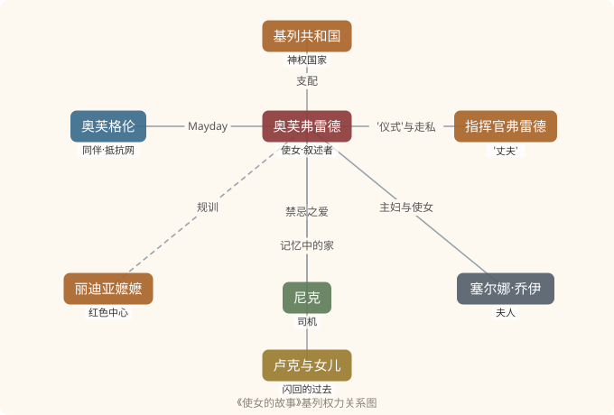

使女的故事
一、基本信息
| 作者 | 阿特伍德 |
|---|---|
| 成书/出版 | 1985年出版（Britannica） Margaret Atwood — Encyclopaedia Britannica（百科全书） |
| 国别/地区 | 加拿大 |
| 时代 | 现当代 · 20世纪 |
| 体裁 | 长篇小说（反乌托邦） |
| 语言 | 英语 |

《使女的故事》基列权力关系图（人物关系图）
二、创作背景
设定（Britannica）：'a dystopian novel set in a Christian fundamentalist theocracy'——基列共和国（Gilead）：美国政变后建立的基督教原教旨神权国家，有生育能力的女性被编为'使女'（Handmaid）分配给指挥官家庭作为生育工具。
历史原型（作者自述大意，通说待核）：清教马萨诸塞、罗马尼亚生育政策、伊朗革命、巴尔干、奴隶制——'没有一件是发明的'（其自述，通说待核）。
接受（Britannica）：1986年总督奖（Britannica）；Hulu 剧集（2017—，通说待核）使其成为全球抗议符号（通说待核）。
三、内容脉络
第一视角：使女奥芙弗雷德（Offred——'Of Fred'：属于弗雷德指挥官之名，通说）在基列的'家'中记录日常——购物、授精仪式（'仪式'Ceremony）、派对、墙上的尸体。
记忆的闪回：丈夫卢克与女儿的被拆散、穿越边境失败的'红色中心'（Red Center）训练——'别让那些混蛋把你碾碎'（ Aunt Lydia 语，原文意，待核）。
反抗的微光：与指挥官的秘密棋局与杂志（违规）、与司机尼克的爱情（'Nolite te bastardes carborundorum'——'别让混蛋们磨碎你'——伪拉丁文刻语，原文）。
结尾（'夜'章）：出逃（或被捕？）的悬念——'历史会议'章节（2195年基列学研讨会）以学术口吻追认其录音为'手稿'——叙述本身成为历史文物（通说）。
四、主要人物表
| 人物 | 身份 | 说明 |
|---|---|---|
| 奥芙弗雷德（June/Offred） | 使女·叙述者 | '姓名=所有权'的政治：以第一人称录音对抗抹除 |
| 指挥官弗雷德 | 上层男权 | '文字的走私者'——特权与伪善 |
| 塞尔娜·乔伊 | 指挥官夫人 | '圣经_quote'与不孕——同为制度囚徒（通说） |
| 奥芙格伦 | 另一使女 | '我以前不是这样的'——地下抵抗网（Mayday，通说） |
| 丽迪亚嬷嬷 | 红色中心教官 | '别让混蛋们碾碎你'——体制内'慈爱'的暴力（通说） |
| 尼克 | 司机 | 眼线？同盟？——暧昧的爱情线 |
五、主题与艺术特点
- 身体的政治：生育作为国家资源——子宫的'国有化'（通说）。
- 语言的抵抗：'Nolite te bastardes carborundorum'（伪拉丁语）、地下拼字游戏——文字作为反抗（通说）。
- 记忆的档案化：录音=历史的'证词'（末章学术框架——通说）。
- '推测'而非'预言'：一切皆有历史先例（作者立场，通说待核）。
- 艺术特点：现在-过去双线、未解释的专有名词（渐进式披露）、'夜'章的断裂式结尾。
六、影响与评论
- Britannica（Atwood 条目）：The Handmaid's Tale (1985) 为其 most celebrated work——'Christian fundamentalist theocracy'反乌托邦；1986总督奖。
Margaret Atwood — Encyclopaedia Britannica（百科全书） - Britannica：Hulu 剧集（2017—）与2019《证言》布克奖续章——IP 的跨媒介生命（剧集细节通说待核）。
Margaret Atwood — Encyclopaedia Britannica（百科全书） - 符号化：红袍白帽成为全球女性权利抗议的通用视觉（通说待核）。
Margaret Atwood — Encyclopaedia Britannica（百科全书） - 中译：陈小慰译《使女的故事》（上海译文出版社，通说待核）。
Margaret Atwood — Encyclopaedia Britannica（百科全书）
七、阅读建议
难点
- 未解释的基列术语（使女/嬷嬷/仪式/安置）——渐进披露是设计。
- 闪回与现实的双线时序——注意'夜'章的每部结尾。
- 录音的'转写'立场（2195年学者注释）——末章必须读。
- 陈小慰译《使女的故事》（上海译文出版社，通说待核）：通行本。
- 英文本：Anchor/Vintage 版（含作者新序——2017年序，通说待核）。
通读15章 → 精读'仪式'与'夜'章 → 读2017作者序（'没有一件是发明的'）→ 对照剧集第1—3季。
八、待核实
- 1985年 McClelland & Stewart 出版细节待核。
- Hulu 剧集获奖（艾美奖等）清单待核。
- 陈小慰译本信息待核。
- 2017年作者序原文待核。
本页主要来源
阿特伍德的其他收录作品：使女的故事